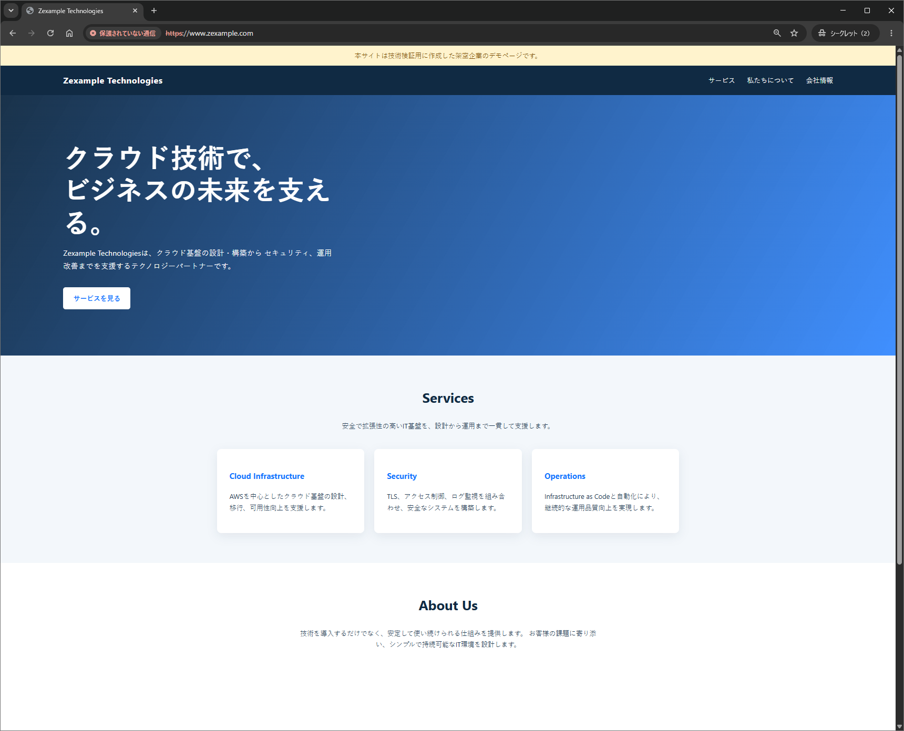
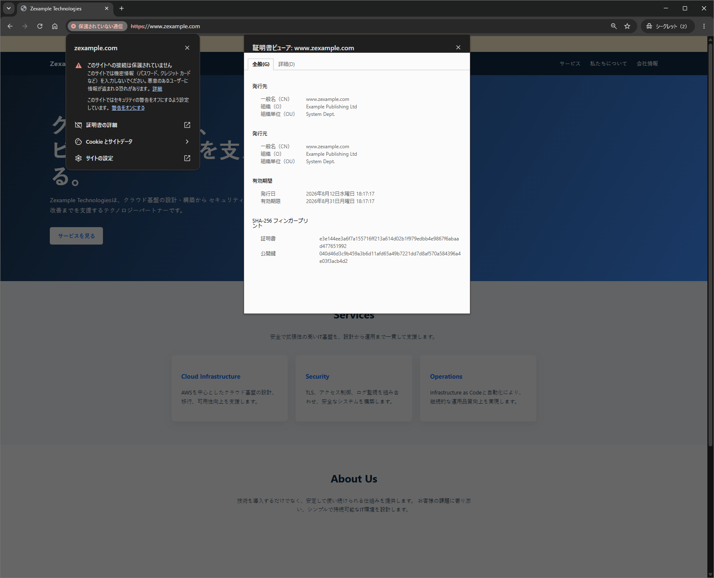

Apache SSL終端構築手順（自己署名証明書）
EC2上のRHEL 9でApacheへEC秘密鍵と自己署名証明書を設定し、HTTPからHTTPSへのリダイレクトとSSL終端を確認する手順をまとめる
環境情報
| 項目 | 内容 |
|---|---|
| OS | Red Hat Enterprise Linux 9.8 on EC2 |
| AWSリージョン | ap-northeast-1 |
| 公開FQDN | www.zexample.com |
| Apache | httpd-2.4.62-13.el9_8.5 |
| TLSモジュール | mod_ssl-2.4.62-13.el9_8.5 |
| OpenSSL | OpenSSL 3.5.5-6.el9_8 |
| 秘密鍵方式 | EC P-256（prime256v1） |
| 証明書方式 | 自己署名証明書（有効期限：2026年8月31日18時17分17秒JST） |
証明書発行の流れ
- サーバー内での秘密鍵生成
- 秘密鍵に対応する公開鍵と申請者情報を含むCSR生成
- 公開CA利用時のCSR提出。秘密鍵は提出対象外
- CAによるドメイン管理権限や申請者情報の検証
- CAからのサーバー証明書と中間証明書の受領
- 秘密鍵、サーバー証明書、必要な証明書チェーンのApache設定
- 鍵の対応、SAN、有効期限、Apache構文、実際のTLS通信の確認
自己署名証明書では手順3から5の公開CAを使わず、CSRを同じ秘密鍵で署名する。暗号化通信はできるが、クライアントが発行者を信頼していないためブラウザ警告が表示される。自己署名証明書は検証用途に限定し、公開サービスでは信頼されたCAの証明書を使用する
ファイルパス
| 種類 | パス | 所有者・権限 |
|---|---|---|
| DocumentRoot | /var/www/www.zexample.com/public_html | root:root 0755 |
| 秘密鍵 | /etc/pki/tls/private/www.zexample.com.key | root:root 0600 |
| 証明書署名要求 | /etc/pki/tls/private/www.zexample.com.csr | root:root 0644 |
| サーバー証明書 | /etc/pki/tls/certs/www.zexample.com.crt | root:root 0644 |
| 証明書拡張設定 | /root/www.zexample.com-cert-ext.cnf | root:root |
| VirtualHost | /etc/httpd/conf.d/www.zexample.com.conf | root:root 0644 |
| アクセスログ | /var/log/httpd/www.zexample.com-access.log | Apacheプロセス管理 |
| エラーログ | /var/log/httpd/www.zexample.com-error.log | Apacheプロセス管理 |
.crt、.cer、.pemは命名上の拡張子であり、それだけではファイル形式を判定できない。Apacheへ指定する前にopenssl x509でPEM形式のX.509証明書として読めることを確認する。本構成ではRHEL標準の/etc/pki/tls/privateと/etc/pki/tls/certsを使用する
出典：Red Hat - Setting up the Apache HTTP web server
ApacheのインストールとCSR作成
2026年8月12日から13日に実機で実行したコマンドと確認結果を掲載する。長いパッケージログは確認に必要な行のみ抜粋し、秘密鍵の内容、接続元IP、EC2の内部名と一時的なパブリックIPv4は掲載しない。所在地は<CITY>へ匿名化している
1. Apacheと関連ツールのインストール
Apache HTTP Server、TLS終端用のmod_ssl、証明書操作用のopenssl、DNS確認用のbind-utilsのインストール
dnf install httpd mod_ssl openssl bind-utils実行例を展開する
Transaction Summary
================================================================
Install 19 Packages
Upgrade 2 Packages
Installed:
bind-utils-32:9.16.23-40.el9_8.2.x86_64
httpd-2.4.62-13.el9_8.5.x86_64
mod_ssl-1:2.4.62-13.el9_8.5.x86_64
（依存パッケージは省略）
Complete!インストールされたパッケージのバージョン確認
rpm -q httpd mod_ssl openssl実行例を展開する
httpd-2.4.62-13.el9_8.5.x86_64
mod_ssl-2.4.62-13.el9_8.5.x86_64
openssl-3.5.5-6.el9_8.x86_64Apache本体のバージョン確認
httpd -v実行例を展開する
Server version: Apache/2.4.62 (Red Hat Enterprise Linux)
Server built: Jul 9 2026 00:00:002. ホスト名とDocumentRootの作成
OSホスト名とApacheのServerNameは別設定である。単一サイト構成として、OSの静的ホスト名を公開FQDNへ変更
hostnamectl set-hostname www.zexample.com/var/www/tls-labでも動作するが、複数サイトを判別しやすくするため、FQDN単位のDocumentRootを作成
install -d -o root -g root -m 0755 /var/www/www.zexample.com/public_htmlFQDN単位のDocumentRoot作成結果の確認
ls -la /var/www/実行例を展開する
total 4
drwxr-xr-x. 5 root root 57 Aug 12 08:41 .
drwxr-xr-x. 20 root root 4096 Aug 12 08:31 ..
drwxr-xr-x. 2 root root 6 Jul 9 11:49 cgi-bin
drwxr-xr-x. 2 root root 6 Jul 9 11:49 html
drwxr-xr-x. 3 root root 25 Aug 12 08:41 www.zexample.com検証用HTMLの作成
tee /var/www/www.zexample.com/public_html/index.html >/dev/null <<'EOF'
<!doctype html>
<html lang="ja">
<head>
<meta charset="utf-8">
<title>www.zexample.com</title>
</head>
<body>
<h1>RHEL 9.8 Apache HTTPS</h1>
<p>www.zexample.comでApacheが稼働しています。</p>
</body>
</html>
EOFDocumentRootの所有者とパーミッション確認
ls -ld /var/www/www.zexample.com/public_html実行例を展開する
drwxr-xr-x. 2 root root 24 Aug 12 08:42 /var/www/www.zexample.com/public_html3. EC P-256秘密鍵の生成
秘密鍵用ディレクトリへの移動
cd /etc/pki/tls/private秘密鍵生成前のディレクトリ確認
ls -la /etc/pki/tls/private実行例を展開する
total 0
drwxr-xr-x. 2 root root 6 Jul 15 09:44 .
drwxr-xr-x. 6 root root 143 Jul 15 09:44 ..NIST P-256に相当するprime256v1を使用したEC秘密鍵生成
openssl genpkey -algorithm EC -pkeyopt ec_paramgen_curve:prime256v1 -out www.zexample.com.key秘密鍵のパーミッション設定
chmod 600 www.zexample.com.key秘密鍵を再確認する場合は、秘密値を表示しない次のコマンドを使用する。秘密鍵の内容を表示するコマンドと出力は公開記録へ掲載しない
openssl pkey -in www.zexample.com.key -check -noout4. 対話式CSRの生成
秘密鍵を使用したPKCS#10形式CSRの生成
openssl req -new -key www.zexample.com.key -out www.zexample.com.csr実行例を展開する
Country Name (2 letter code) [XX]:JP
State or Province Name (full name) []:Tokyo
Locality Name (eg, city) [Default City]:<CITY>
Organization Name (eg, company) [Default Company Ltd]:Example Publishing Ltd
Organizational Unit Name (eg, section) []:System Dept.
Common Name (eg, your name or your server's hostname) []:www.zexample.com
Email Address []:
challenge password []:
optional company name []:| 入力欄 | 説明 | パラメータ |
|---|---|---|
| Country Name | 2文字の国コード | JP |
| State or Province Name | 都道府県 | Tokyo |
| Locality Name | 市区町村（公開時に匿名化） | <CITY> |
| Organization Name | 組織の正式名称 | Example Publishing Ltd |
| Organizational Unit Name | 部署名 | System Dept. |
| Common Name | 証明書を利用するFQDN | www.zexample.com |
| Email Address | メールアドレス | 空欄 |
| challenge password | CSRの追加パスワード | 空欄 |
| optional company name | 追加の組織名 | 空欄 |
CSRのSubject・公開鍵方式・署名アルゴリズム確認
openssl req -noout -text -in www.zexample.com.csr実行例を展開する
Certificate Request:
Data:
Version: 1 (0x0)
Subject: C=JP, ST=Tokyo, L=<CITY>, O=Example Publishing Ltd, OU=System Dept., CN=www.zexample.com
Subject Public Key Info:
Public Key Algorithm: id-ecPublicKey
Public-Key: (256 bit)
ASN1 OID: prime256v1
NIST CURVE: P-256
Attributes:
(none)
Requested Extensions:
Signature Algorithm: ecdsa-with-SHA256CSRに含まれる公開鍵によるCSR自己署名の検証
openssl req -noout -verify -in www.zexample.com.csr実行例を展開する
Certificate request self-signature verify OK秘密鍵とCSRのパス、所有者、パーミッション確認
ls -la実行例を展開する
total 8
drwxr-xr-x. 2 root root 62 Aug 12 08:57 .
drwxr-xr-x. 6 root root 143 Jul 15 09:44 ..
-rw-r--r--. 1 root root 509 Aug 12 08:57 www.zexample.com.csr
-rw-------. 1 root root 241 Aug 12 08:54 www.zexample.com.key出典：OpenSSL 3.5 - openssl-genpkey
証明書発行方式の選択
| 選択肢 | CSRの扱い | 受け取るもの | 用途 |
|---|---|---|---|
| 自己署名証明書 | 外部へ提出せず、同じ秘密鍵で署名 | 自己署名CRT | サーバー内のTLS構成確認 |
| 公開CA | CA側でFQDNを指定し、必要に応じてCSRを提出 | サーバー証明書と中間証明書 | 一般ブラウザから信頼される公開サービス |
CAへのCSR提出方法に共通コマンドはない。利用する認証局の管理画面でサーバー証明書 ＞ CSR貼り付けなどを選び、-----BEGIN CERTIFICATE REQUEST-----から-----END CERTIFICATE REQUEST-----までを提出する。秘密鍵ファイルは送信しない
出典：Red Hat - Creating and managing TLS keys and certificates
自己署名証明書の発行
CSRから証明書を作成する際に、証明書へSANを追加し、EC鍵の用途へ署名用のdigitalSignatureを指定するサーバー証明書拡張設定の作成
tee /root/www.zexample.com-cert-ext.cnf >/dev/null <<'EOF'
[server-cert]
basicConstraints = critical, CA:FALSE
keyUsage = critical, digitalSignature
extendedKeyUsage = serverAuth
subjectAltName = DNS:www.zexample.com
EOF発行日の2026年8月12日から8月31日までの検証期間として、19日間有効な自己署名証明書を発行する。次のコマンドは端末ログの該当行が一部欠損しているため、拡張設定、19日間の有効期間、発行結果から再構成したコマンド例であり、端末ログから逐語確認したものではない
自己署名証明書の発行
openssl x509 -req -in /etc/pki/tls/private/www.zexample.com.csr \
-signkey /etc/pki/tls/private/www.zexample.com.key \
-sha256 \
-days 19 \
-extfile /root/www.zexample.com-cert-ext.cnf \
-extensions server-cert \
-out /etc/pki/tls/certs/www.zexample.com.crt実行例を展開する
Certificate request self-signature ok
subject=C=JP, ST=Tokyo, L=<CITY>, O=Example Publishing Ltd, OU=System Dept., CN=www.zexample.com証明書の所有者とパーミッション設定
chown root:root /etc/pki/tls/certs/www.zexample.com.crt
chmod 644 /etc/pki/tls/certs/www.zexample.com.crtDocumentRoot、秘密鍵、証明書へのSELinuxコンテキスト適用
restorecon -RFv \
/var/www/www.zexample.com \
/etc/pki/tls/private/www.zexample.com.key \
/etc/pki/tls/certs/www.zexample.com.crt実行例を展開する
Relabeled /var/www/www.zexample.com from unconfined_u:object_r:httpd_sys_content_t:s0 to system_u:object_r:httpd_sys_content_t:s0
Relabeled /var/www/www.zexample.com/public_html from unconfined_u:object_r:httpd_sys_content_t:s0 to system_u:object_r:httpd_sys_content_t:s0
Relabeled /var/www/www.zexample.com/public_html/index.html from unconfined_u:object_r:httpd_sys_content_t:s0 to system_u:object_r:httpd_sys_content_t:s0
Relabeled /etc/pki/tls/private/www.zexample.com.key from unconfined_u:object_r:cert_t:s0 to system_u:object_r:cert_t:s0
Relabeled /etc/pki/tls/certs/www.zexample.com.crt from unconfined_u:object_r:cert_t:s0 to system_u:object_r:cert_t:s0証明書とEC鍵の整合性確認
自己署名で同じ値となるSubjectとIssuer、シリアル番号、有効期間の確認
openssl x509 -in /etc/pki/tls/certs/www.zexample.com.crt -noout -subject -issuer -serial -dates実行例を展開する
subject=C=JP, ST=Tokyo, L=<CITY>, O=Example Publishing Ltd, OU=System Dept., CN=www.zexample.com
issuer=C=JP, ST=Tokyo, L=<CITY>, O=Example Publishing Ltd, OU=System Dept., CN=www.zexample.com
serial=6C77F27965DCE26E065D26D88EC87FD9B1DB7014
notBefore=Aug 12 09:17:17 2026 GMT
notAfter=Aug 31 09:17:17 2026 GMTSubject Alternative Name（SAN）の確認
openssl x509 -in /etc/pki/tls/certs/www.zexample.com.crt -noout -ext subjectAltName実行例を展開する
X509v3 Subject Alternative Name:
DNS:www.zexample.comExtended Key Usage（EKU）の確認
openssl x509 -in /etc/pki/tls/certs/www.zexample.com.crt -noout -ext extendedKeyUsage実行例を展開する
X509v3 Extended Key Usage:
TLS Web Server Authentication自己署名証明書を自身のトラストアンカーとした署名検証
openssl verify -CAfile /etc/pki/tls/certs/www.zexample.com.crt /etc/pki/tls/certs/www.zexample.com.crt実行例を展開する
/etc/pki/tls/certs/www.zexample.com.crt: OKEC秘密鍵から取り出した公開鍵のSHA-256算出
openssl pkey -in /etc/pki/tls/private/www.zexample.com.key -pubout | openssl sha256実行例を展開する
SHA2-256(stdin)= fc5b04008ec2f3266554b9c8d87dddedd61ac1a71833f6fd15a39ebddec9c8cb証明書から取り出した公開鍵のSHA-256算出。秘密鍵側と結果が完全に一致することによる、秘密鍵と証明書の対応確認
openssl x509 -in /etc/pki/tls/certs/www.zexample.com.crt -pubkey -noout | openssl sha256実行例を展開する
SHA2-256(stdin)= fc5b04008ec2f3266554b9c8d87dddedd61ac1a71833f6fd15a39ebddec9c8cbopenssl rsa -modulusとopenssl x509 -modulusの比較はRSA鍵向けであり、EC鍵には使用しない。-subject_hashと-issuer_hashは証明書をSubject名またはIssuer名で検索するための索引値で、鍵と証明書の整合性を示すハッシュではない
ApacheのHTTPS終端設定
HTTPからHTTPSへの301リダイレクトと、自己署名証明書を使用したHTTPS終端を行うVirtualHost設定の作成。設定ファイル名には対象FQDNを使用する
tee /etc/httpd/conf.d/www.zexample.com.conf >/dev/null <<'EOF'
<VirtualHost *:80>
ServerName www.zexample.com
Redirect permanent / https://www.zexample.com/
</VirtualHost>
<VirtualHost *:443>
ServerName www.zexample.com
DocumentRoot /var/www/www.zexample.com/public_html
SSLEngine on
SSLCertificateFile /etc/pki/tls/certs/www.zexample.com.crt
SSLCertificateKeyFile /etc/pki/tls/private/www.zexample.com.key
<Directory "/var/www/www.zexample.com/public_html">
Options -Indexes
AllowOverride None
Require all granted
</Directory>
ErrorLog /var/log/httpd/www.zexample.com-error.log
CustomLog /var/log/httpd/www.zexample.com-access.log combined
</VirtualHost>
EOFVirtualHost設定へのSELinuxコンテキスト適用
restorecon -v /etc/httpd/conf.d/www.zexample.com.confRHEL既定のTLS VirtualHostとの重複解消
初回のhttpd -tでは、ssl.confが参照するlocalhost.crtが存在しないため構文確認に失敗した。また、httpd -tSでは既定の_default_:443と作成したVirtualHostが443番で重複していた
httpd -t実行例を展開する
AH00526: Syntax error on line 85 of /etc/httpd/conf.d/ssl.conf:
SSLCertificateFile: file '/etc/pki/tls/certs/localhost.crt' does not exist or is emptyssl.confのバックアップ取得
cp -pi /etc/httpd/conf.d/ssl.conf /etc/httpd/conf.d/ssl.conf.20260813Listen 443 httpsなどの共通設定を残し、既定の_default_:443ブロックだけをコメントアウト
sed -i '/^[[:space:]]*<VirtualHost _default_:443>/,/^[[:space:]]*<\/VirtualHost>/ s/^/#/' /etc/httpd/conf.d/ssl.conf修正後はhttpd -tがSyntax OKとなり、httpd -Sで80番と443番の両方がwww.zexample.com.confへ割り当てられた
出典：Apache HTTP Server - mod_ssl
Apacheの構文確認とサービス有効化
TLSモジュールの読み込み確認
httpd -M | grep ssl_moduleSyntax OKとなることによるApache構文確認
httpd -t80番・443番におけるwww.zexample.comのVirtualHost割り当て確認
httpd -SApacheの起動とOS起動時の自動起動有効化
systemctl enable --now httpdサービス状態確認。実機ではActive: active (running)となり、80番・443番での待ち受けがステータスへ表示された
systemctl status httpdTCP 80番・443番のLISTEN確認
ss -lntp | grep -E ':(80|443)\b'HTTP・HTTPS通信確認
サーバー内部からのHTTP・HTTPS間301リダイレクト確認
curl -I -H 'Host: www.zexample.com' http://127.0.0.1/実行例を展開する
HTTP/1.1 301 Moved Permanently
Location: https://www.zexample.com/自己署名証明書を明示的に信頼した、DNSを経由しないローカル443番のHTTPSコンテンツ確認
curl -i --cacert /etc/pki/tls/certs/www.zexample.com.crt --resolve www.zexample.com:443:127.0.0.1 https://www.zexample.com/実行例を展開する
HTTP/1.1 200 OK
Content-Type: text/html; charset=UTF-8
<!doctype html>
...
<h1>RHEL 9.8 Apache HTTPS</h1>デモサイトへの更新とブラウザ確認
初期確認後、DocumentRootのindex.htmlを架空企業「Zexample Technologies」のデモサイトへ更新した。HTMLファイルの変更は次のリクエストから反映されるため、Apacheの再起動は行っていない
chmod 644 /var/www/www.zexample.com/public_html/index.html
restorecon -v /var/www/www.zexample.com/public_html/index.html
www.zexample.comのHTTPS表示。検証用証明書のため、アドレスバーには保護されていない通信と表示される
TLSによる暗号化通信は成立していますが、証明書がブラウザの信頼済みルートCAへ連鎖しないため、接続先の身元を既定では信頼できない。検証では警告を確認したうえで閲覧し、公開サービスでは信頼されたCAが発行した証明書を使用する